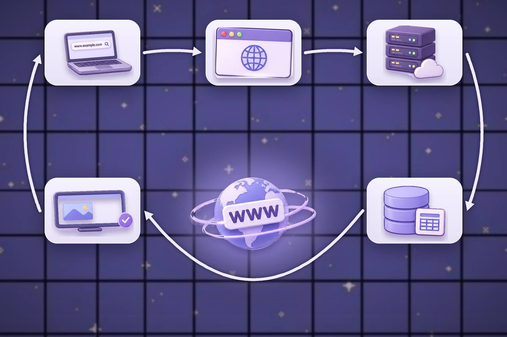
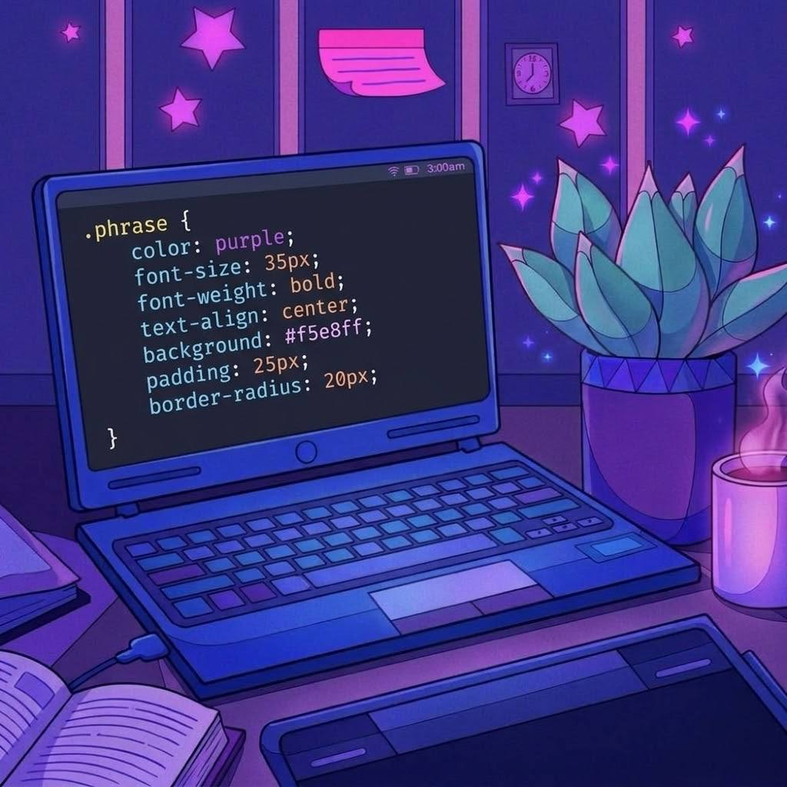

أتطلع إلى تطوير مهاراتي وتعلّم إنشاء تصميم صفحات ومواقع ويب تفاعلية تجمع بين الإبداع وسهولة الاستخدام.
هو نظام يتيح للمستخدمين الوصول إلى صفحات ومواقع الويب عبر الإنترنت.
رحلة بسيطة توضّح كيف تنتقل طلباتك عبر الويب حتى تظهر لك الصفحة.

يبدأ المستخدم بكتابة عنوان الموقع أو الضغط على رابط لزيارته.
والتي تُعرف بأنها لغة ترميز النص التشعبي، وتُستخدم لبناء هيكل صفحة الويب وتحديد محتوياتها، مثل العناوين والفقرات والصور والأزرار.
CSS وتُعرف بأنها لغة تنسيق صفحات الويب، وتُستخدم للتحكم في مظهر عناصر الصفحة، مثل الألوان والخطوط والأحجام والخلفيات والمسافات.

تقنية JavaScript تُستخدم لتضيف التفاعل والحركة إلى صفحاتك في الويب، مثل الاستجابة للضغط على الأزرار، وإظهار الرسائل، وتغيير المحتوى، وتنفيذ الأوامر حسب تفاعل المستخدم!
جرّب بنفسك كيف تتكامل اللغات الثلاث في بناء موقع ويب.
اكتشف كيف تُبنى مواقع الويب ✨
ثلاث لغات، تجربة واحدة!
هل تساءلت يومًا ماذا يحدث عندما تضغط على زر الشراء؟ تعال نكتشف الرحلة!
عسل سدر طبيعي، بطعم أصيل وجودة مميزة
التحقق من توفر المنتج
التحقق من بيانات الطلب
تسجيل الطلب وإرسال النتيجة
استعنت بـ ChatGPT خلال رحلتي في تصميم وتطوير موقعي، ليكون مساعدًا في التعلّم وحل المشكلات وتحويل الأفكار إلى تطبيق عملي.
ChatGPT
ساعدتني في فهم أساسيات HTML وCSS وJavaScript، وتنسيق الموقع، واقتراح الأفكار، واكتشاف الأخطاء وإصلاحها.
تعلّمت كيف أبني عناصر الصفحة، وأتحكم في مظهرها، وأضيف التفاعل إليها، وكيف تتكامل هذه التقنيات معًا.